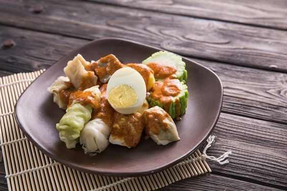

Siomay

Deskripsi
Siomay adalah makanan khas Indonesia yang terbuat dari daging ikan atau daging ayam yang dihaluskan, dicampur dengan tepung tapioka, dan dibungkus dengan kulit pangsit. Siomay biasanya disajikan dengan saus kacang dan perasan jeruk nipis.
Daerah Asal
Siomay berasal dari daerah Jawa Barat, khususnya Bandung. Makanan ini sangat populer sebagai jajanan pasar dan sering ditemukan di berbagai acara.
Resep Siomay
Berikut adalah resep sederhana untuk membuat Siomay:
- Bahan:
- 250 gram daging ikan tenggiri, haluskan
- 100 gram tepung tapioka
- 2 siung bawang putih, haluskan
- 1 sendok teh garam
- 1 sendok teh merica bubuk
- Kulit pangsit secukupnya
- Saus kacang untuk penyajian
- Langkah-langkah:
- Campurkan daging ikan, tepung tapioka, bawang putih, garam, dan merica dalam sebuah wadah. Aduk hingga rata.
- Ambil sejumput adonan, letakkan di atas kulit pangsit, dan rapatkan.
- Siapkan kukusan dan kukus siomay selama 20 menit hingga matang.
- Sajikan siomay dengan saus kacang dan perasan jeruk nipis.